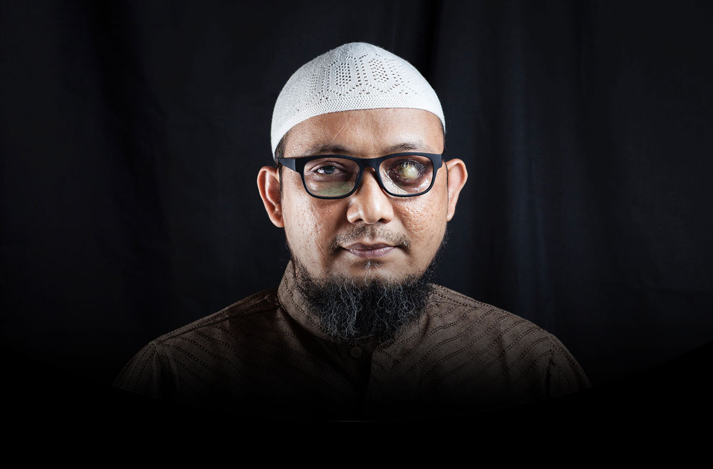
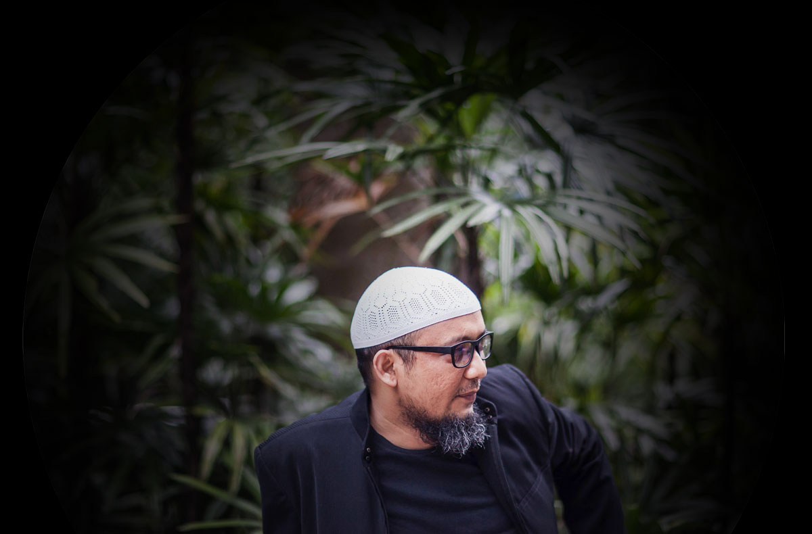
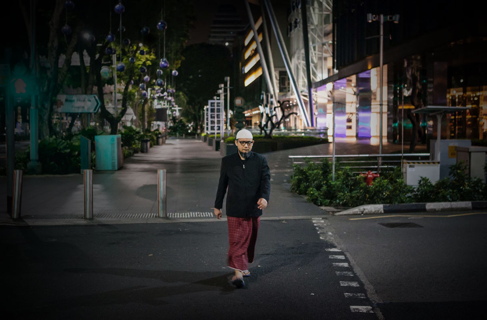

Setahun kasus Novel Baswedan
Penyidikan Polisi Jalan di Tempat
Setahun setelah penyerangan terhadap Novel Baswedan, polisi masih belum menangkap pelakunya. Padahal kasus ini seharusnya mudah dipecahkan karena bukti berlimpah.
Dua orang pengawal mengiringi langkah Novel Baswedan dari Masjid Jami Al Ihsan menuju rumahnya di Jalan Deposito, Kelapa Gading, Jakarta Utara. Satu orang membantu menunjukkan arah ke gerbang rumah, sementara yang lain menjaga penyidik Komisi Pemberantasan Korupsi itu dari belakang.
Sebenarnya Novel tak terlalu suka dikawal. Tapi ia terpaksa menerima bantuan mereka. "Soalnya (penglihatan) saya belum terlalu jelas kalau belum dibersihkan matanya, jadi ada dua bayangan." kata Novel saat ditemui Tempo di rumahnya pada Jumat, 6 April 2018. Ia harus menunggu istrinya Rina Emilda membersihkan matanya dengan obat tetes Dexamethasone jika ingin penglihatannya lebih terang.
Sehari sebelumnya, ia baru pulang dari Singapura sesudah operasi mata kiri di Rumah Sakit National Eye Centre. Walau operasi berjalan lancar, mata Novel masih memerlukan waktu untuk pulih. Ada darah di antara lensa yang belum hilang. Untung penglihatannya sedikit membaik: Ia bisa melihat bayangan jari yang digerakkan dan siluet tubuh.
Dua orang tak dikenal menyiram air keras ke wajah Novel pada 11 April tahun lalu, mengenai kedua matanya. Penyidik yang banyak mengusut kasus korupsi besar ini lalu dirawat ke Singapura. Ia lalu pulang ke Indonesia pada 22 Februari setelah hampir lebih dari 10 bulan berada di negeri singa.
Dokter mengatakan kedua mata Novel akan buta jika dibiarkan tak dirawat. Pria berusia 41 tahun itu lantas menjalani beberapa operasi untuk menyelamatkan matanya. Mata kirinya mengalami kerusakan 95 persen.
Sekarang mata kiri Novel diimplan total dan mata kanannya harus memakai hard lens untuk membantu penglihatannya. Novel hanya bisa menggunakan sebelah matanya untuk membaca. Sempat menggunakan kacamata baca, penglihatan Novel lalu berkurang karena ada carutan di kornea.
Ia pun berharap kondisinya makin membaik dan tidak memerlukan operasi lanjutan. "Kemarin operasi yang terakhir semestinya, meskipun segala sesuatu bisa terjadi," kata Novel.
Novel membutuhkan setidaknya satu mata yang awas untuk menyelesaikan tumpukan perkara kakap yang mampir di meja kerjanya. Bekerja di KPK sejak 2007, ia pernah menangani korupsi pengadaan simulator kemudi kendaraan roda dua dan roda empat pada 2003-2010 dan 2010-2012 yang merugikan negara Rp 121,8 miliar. KPK menjerat Kepala Korps Lalu Lintas Inspektur Jenderal Djoko Susilo dalam kasus ini.
Setelah kasus itu, Novel memimpin pengusutan kasus korupsi pengadaan kartu tanda penduduk elektronik di Kementerian Dalam Negeri pada 2011-2012 yang merugikan negara Rp 2,3 triliun. Pada saat menangani kasus inilah Novel mendapatkan teror penyiraman air keras seusai salat subuh di masjid dekat rumahnya.
Penyerangan itu membuat hidup Novel melenceng keluar jalur. Selain harus menunda pekerjaan rutin, hampir sepuluh bulan ia tak bisa bertemu keempat anak perempuannya. Namun, ia punya cara untuk mengatasi rasa rindu. "Saya sering video call mereka pagi-pagi," kata Novel. Mereka biasanya berbicara tentang ibadah salat dan kegiatan sehari-hari. Novel juga mengingatkan mereka untuk tetap disiplin.
Kini, Novel bisa berkumpul lagi dengan keluarganya dan berencana untuk kembali bertugas di KPK. "Setelah (penglihatan) agak jelas, saya pesan kacamata untuk mata kiri. Saya bisa baca, saya masuk kantor," ujarnya.

SETAHUN setelah penyerangan terhadap Novel Baswedan, polisi masih belum menangkap pelakunya. Kepolisian Daerah Metro Jakarta Raya, yang menangani kasus itu, menyatakan mereka belum dapat mengidentifikasi dua pengendara motor yang diduga sebagai pelaku penyiraman. "Untuk wajah pelaku pun kami belum jelas sekali, siapa yang mengendarai. Jadi sampai sekarang, kami mencoba menggali dari saksi yang lain," ujar juru bicara Polda Metro Jaya Komisaris Besar Raden Prabowo Argo Yuwono saat ditemui Tempo, Jumat, 6 April 2018.
Tiga bulan setelah penyerangan itu, Kepala Kepolisian RI Jenderal Tito Karnavian merilis sketsa wajah seorang pria. Menurut Tito, sketsa itu digambar setelah seorang saksi mengaku melihat wajah pelaku lima menit sebelum Novel diserang.
Tempo juga sempat merilis rekaman CCTV detik-detik penyerangan terhadap Novel diikuti dengan sketsa dan ciri-ciri terduga penyerang Novel pada edisi 31 Juli 2017.
Tapi Kepala Kepolisian Daerah Metro Jaya Inspektur Jenderal Idham Azis mengatakan sketsa wajah yang dirilis Tito bukan pelaku. Pada akhir November tahun lalu, Polda Metro Jaya akhirnya merilis dua sketsa wajah pria yang berbeda. Idham mengklaim kemiripan sketsa itu sudah 90 persen sesuai dengan wajah terduga penyerang. Salah satu sketsa yang dirilis Polda itu mirip dengan sketsa yang pernah dibuat Tempo.
Penyebaran sketsa Polda Metro Jaya itu dilakukan berbarengan dengan dibukanya saluran pengaduan 0813-9884-4474. Ada seribu telepon dan 730 pesan singkat masuk ke hotline. Tapi polisi hanya tiga kali menelusuri aduan masyarakat. "Belum ada informasi yang signifikan, malahan yang iseng itu banyak sekali," kata Argo.


Awal tahun ini, polisi menyebar dua sketsa baru terduga penyerang Novel. Menurut Argo, gambar yang baru itu muncul lantaran ada dua saksi yang memiliki keterangan berbeda terhadap satu orang pelaku. "Jadi, ada dua model sketsa gambar," ujarnya.
Selain beberapa kali menyebar sketsa, polisi juga memeriksa 68 orang saksi, 38 closed circuit television (CCTV), dan 109 toko kimia di DKI Jakarta. Tapi semua petunjuk hanya mengarahkan penyidik ke jalan buntu. Dari puluhan titik CCTV yang ada, polisi hanya bisa mengambil rekaman di dua titik. "Karena resolusinya kurang bagus dan kadang ada yang tidak merekam. Ada yang dalam periode satu dua pekan datanya sudah terhapus," ujar Argo.
Sedangkan dari 109 toko kimia yang diperiksa, hanya 91 toko yang masih beroperasi. Polisi juga tidak mendapati pembelian yang tidak wajar pada periode 9 dan 10 April 2017.
Argo juga mengatakan bahwa polisi masih membutuhkan keterangan tambahan dari Novel ihwal kasus besar apa saja yang telah ditanganinya, kapan merasa dikuntit orang, dan saat itu sedang menangani kasus apa.
Sebenarnya polisi telah memeriksa Novel saat dia menjalani pengobatan mata di Singapura, 14 Agustus 2017. Tapi ketika itu, Argo menuturkan, Novel baru menceritakan kronologi penyerangannya. "Karena kan waktu itu kondisinya masih belum fit," ujarnya.
Meski belum mampu menangkap pelaku penyerangan Novel Baswedan, Wakil Kepala Kepolisian RI, Komisaris Jenderal Syafruddin, mengatakan Kapolda Metro Jaya Inspektur Jenderal Idham Azis telah melaporkan perkembangan kasus Novel kepada pimpinan KPK pada awal April 2018.
Namun, Syafruddin enggan membeberkan sampai di mana kasus tersebut. "Ada yang perlu dibuka ada yang perlu dirahasiakan, karena ini menuju pada tersangka," kata Syafruddin saat ditemui di kantor Dewan Masjid Indonesia, Senin, 2 April 2018.
PERWAKILAN masyarakat sipil merasa sama sekali tidak puas dengan performa polisi menangani kasus penyiraman Novel. Alghiffary Aqsa, Direktur Lembaga Bantuan Hukum Jakarta dan pengacara Novel, menyatakan Novel telah memberikan keterangan yang cukup lengkap saat diperiksa polisi di Singapura. "Apakah orang-orang yang disebut oleh Novel dalam berita acara pemeriksaan sudah seluruhnya diperiksa kepolisian?" katanya.
Menurut Alghiffary, ada banyak informasi yang bisa dikembangkan kepolisian dari kronologi yang diceritakan Novel. Misalnya, cerita soal adanya pejabat kepolisian yang memperingatkan Novel soal kondisi keamanannya. Ada juga dua anggota detasemen khusus yang memberikan informasi soal orang yang mengintai Novel.
Novel memang merasa ia diintai. “Bahkan, menurut info yang saya dengar, pengintai saya adalah polisi. Saya dengar informasi itu, tapi tak punya buktinya,” ujarnya kepada Tempo Juni tahun lalu.
Koordinator Komisi untuk Orang Hilang dan Korban Tindak Kekerasan, Yati Andriyani, mengungkapkan beberapa kejanggalan dalam pengusutan kasus Novel. Salah satunya adalah tidak ditemukannya sidik jari di gagang cangkir yang diduga digunakan untuk menyiramkan air keras ke wajah Novel.
Polisi pernah menyatakan tak ada sidik jari di gagang cangkir karena gelasnya kecil. "Ini janggal, karena pelaku secara khusus dan terarah menyiram muka Novel, sehingga memerlukan konsentrasi, tenaga, dan genggaman tangan kuat pada gagang cangkir," ujar Yati.
Kejanggalan lain, Yati melanjutkan, adalah polisi tidak bersedia mempublikasikan rekaman kamera pengawas yang berkaitan dengan kasus Novel. Padahal, dengan begitu, kata dia, polisi bisa mendapatkan informasi dari masyarakat.
Haris Azhar, anggota Koalisi Masyarakat Sipil Antikorupsi, menyangsikan keterangan polisi yang menyatakan mereka mengecek 38 rekaman CCTV. Timnya menemukan tidak ada lebih dari sepuluh unit kamera pengawas di sekitar rumah Novel. Tapi dia yakin kamera yang ada di sana bisa memberikan keterangan valid. "Jadi ada beberapa CCTV yang bisa dibilang autentik, tapi belum diambil polisi."
Kejanggalan lain adalah polisi dianggap terlalu mudah melepaskan terduga pelaku. “Polisi terkesan hanya menangkap, memeriksa, lalu melepaskan seseorang yang dicurigai tanpa penjelasan ke publik,” kata Tama Satria Langkun dari Indonesia Corruption Watch, Juni tahun lalu. Polisi melepas tiga orang itu setelah mereka dimintai keterangan dengan alasan “memiliki alibi kuat”.
Di antaranya dua orang yang berada di sekitar rumah Novel beberapa hari sebelum kejadian, pada 11 April 2017, serta satu orang yang memiliki kaitan dengan mereka. Tempo menelusuri jejak tiga orang yang pernah dimintai keterangan polisi itu, yakni Hasan Hunusalela, Muklis Ohorella, dan Muhammad Lestaluhu. Mereka terhubung oleh daerah asal yang sama: Kampung Lama, Desa Tulehu, Kecamatan Salahutu, Maluku Tengah. Rumah keluarga mereka di desa itu berdekatan.
Hasan dan Muklis terekam dalam foto jepretan tetangga-tetangga Novel —yang setelah muncul beberapa kali ancaman terhadap sang penyidik berinisiatif membuat pengamanan. Keduanya lebih dari sekali nongkrong di Jalan Deposito, Kelapa Gading, Jakarta Utara, beberapa pekan sebelum kejadian.
Satu foto merekam Hasan duduk di seberang rumah Novel, dipisahkan saluran air. Adapun Muklis terlihat duduk di atas sepeda motor di samping Masjid Al Ihsan, tempat Novel setiap hari menjalankan salat subuh berjamaah. “Pandangannya terus-menerus ke rumah Novel,” kata seorang tetangga. Tetangga lain menyebutkan, mereka menguntit pembantu rumah tangga Novel.
Keterangan itu berbeda dengan pernyataan polisi. Juru bicara Kepolisian Daerah Metro Jaya, Komisaris Besar Raden Prabowo Argo Yuwono, menyebutkan keduanya bekerja untuk perusahaan pembiayaan. Mereka dinyatakan sebagai “mata elang”, atau pencari penunggak kredit kendaraan bermotor. Argo menyatakan tidak tahu apakah ada pengutang di sekitar rumah Novel yang menjadi target.
Dari pelat nomor sepeda motor yang terlihat di foto Muklis, Tempo menemukan Muhammad Yusmin Ohorella sebagai pemiliknya. Dia adalah personel Direktorat Reserse Kriminal Umum Polda Metro Jaya. Polisi berpangkat brigadir kepala ini pun berasal dari Tulehu.
Sayangnya, Yusmin tidak bisa ditemui. Tetangga rumah dengan alamat yang tertera dalam data kepemilikan kendaraan bermotor itu, di Pisangan Lama, Jakarta Timur, tak mengenalnya. Ketua rukun tetangga setempat menyatakan sang polisi hanya memakai alamat itu untuk membuat kartu tanda penduduk. Argo Yuwono membenarkan, Yusmin merupakan anggota kepolisian dan kerabat Muklis. Karena itu, menurut dia, wajar Yusmin meminjamkan sepeda motor ke Muklis.
Satu orang lain yang diperiksa polisi adalah Muhammad Lestaluhu. Fotonya didapat dari sumber di kepolisian, yang mengirimkannya ke beberapa kolega Novel. Sejumlah saksi kejadian 11 April menyebutkan, ia memiliki kemiripan dengan satu di antara dua penyerang. Foto itu diserahkan kepada Kepala Polda Metro Jaya Inspektur Jenderal Mochamad Iriawan, ketika ia menjenguk Novel di Singapura.
Dihubungi melalui telepon, Muhammad Lestaluhu menyatakan tidak terlibat penyerangan Novel. Namun ia mengaku mengenal Hasan dan Muklis. Bersama Hasan, ia menyatakan bekerja sebagai “mata elang”. “Kalau Muklis, gak tahu kerja apa,” ujarnya —pernyataan yang juga berbeda dengan keterangan polisi.
Novel juga memiliki informasi tersendiri tentang kasus penyiramannya. Dalam wawancara dengan Tempo pada Agustus 2017, Novel menyebut ada jenderal polisi aktif yang diduga memerintahkan tim penyidik menghapus sidik jari pelaku yang tertinggal di cangkir wadah air keras saat olah tempat kejadian perkara. Jenderal ini juga diduga terlibat dalam sejumlah rencana penyerangan terhadap Novel dan penyidik KPK lain.
Sang jenderal, menurutnya, memiliki posisi kuat dalam struktur kepolisian. Karena itu, Novel berharap kasus ini bisa diungkap. "Jika tidak, citra kepolisian akan semakin buruk," ujarnya.
Polisi menantang Novel untuk membuka identitas sang jenderal. "Catat ini, katakan jenderal mana, buka, itu sangat berharga, informasi apapun dari masyarakat dari pelapor, dari mana saja ke penyidik buka, kita akan ucapkan terima kasih," ujar Kepala Biro Penerangan Masyarakat Divisi Hubungan Masyarakat Kepolisian Republik Indonesia Brigadir Jenderal Mohammad Iqbal di Polres Metro Jakarta Selatan, Rabu, 11 April 2018.
Novel enggan menyikapi tantangan dari Kepolisian RI. "Saya kira saya tidak dalam posisi untuk menyampaikan nama tersebut kepada publik," kata Novel di Gedung Merah Putih KPK pada Rabu, 11 April 2018.
Menurutnya, ada tempat yang lebih tepat untuk menyampaikan identitas jenderal tersebut. Dia mengaku sudah melaporkan hal itu kepada penyidik, namun Novel enggan membenarkan apakah dalam laporan tersebut dia sudah menyebutkan nama jenderal itu. Novel juga tidak mengetahui apakah Polri sudah mengantongi nama jenderal yang dimaksud atau belum.
Juru bicara Kepolisian Polda Metro Jaya Argo Yuwono mengatakan pemeriksaan terhadap Novel baru pada tahap kronologi kejadian. Ia tak mempermasalahkan jika Novel enggan menyebutkan nama jenderal yang disebutnya terlibat dalam penyerangan yang dialaminya. "Kami enggak masalah, tidak apa-apa. Sebutkan saja, tapi harus ada buktinya," kata Argo.
Gemas melihat langkah polisi yang terlalu pelan mengusut kasus Novel Baswedan, sejumlah lembaga swadaya masyarakat dan koalisi masyarakat sipil mendesak pemerintah membentuk Tim Gabungan Pencari Fakta. "Jangankan menemukan pelaku intelektual, menemukan pelaku lapangan saja belum berhasil," kata Yati.
Haris Azhar mengatakan hasil evaluasi yang diperoleh timnya adalah banyak saksi yang ragu pada komitmen polisi membongkar kasus ini. "Mereka juga banyak yang tidak percaya pada polisi," kata dia. "Investigasi kami (menunjukkan) semakin jelas bahwa penting ada TGPF."
Novel sendiri mendukung pembentukan TGPF. "Saya ingin presiden tahu fakta-fakta sebenarnya," ujarnya di Gedung Merah Putih KPK, Rabu 11 April 2018.
Tapi Wakil Ketua KPK Saut Situmorang lebih percaya kasus penyiraman air keras terhadap Novel ditangani sejalan dengan hukum acara pidana. “Tujuan kami: membawa pelakunya ke pengadilan," ujar Saut kepada Tempo, Selasa, 10 April 2018.
Saut enggan berkomentar soal adanya desakan dari Koalisi Masyarakat Sipil Antikorupsi yang menginginkan agar pemerintah membentu Tim Gabungan Pencari Fakta (TGPF) untuk kasus Novel. Menurut dia, KPK tidak berwenang menyetujui atau menolak TGPF. Karena itu, KPK lebih memilih membantu kepolisian mengungkap pelaku penyerangan Novel dengan mengirimkan tim untuk membantu polisi. Selain itu, Saut menambahkan KPK juga berkonsentrasi pada pemulihan mata Novel agar bisa kembali bekerja.

Novel menilai pimpinan Komisi Pemberantasan Korupsi terlalu pasrah kepada kepolisian dalam pengungkapkan kasusnya. "Seharusnya pasrah kalau polisi bisa dipercaya dan tidak ada kepentingan-kepentingan lain. Kalau ada kepentingan, ya, jadi rumit," kata Novel. Namun ia tidak menyalahkan tindakan tersebut karena kewenangan pengusutan kasus bukan domain KPK.
Sebelumnya Novel pernah menyampaikan kepada Pengawas Internal KPK untuk mengecek lokasi jika terjadi peristiwa teror kepada pegawai lembaga antirasuah. Karena itu, menurut dia, semestinya sejak awal tim internal KPK mengecek langsung lokasi penyerangan. "Saya yakin pengawas internal sudah menyampaikan ke pimpinan, tapi respons pimpinan bagaimana, saya belum tahu," ujar Novel, 6 April lalu.
Hingga kini, Jokowi menyatakan belum akan membentuk TGPF. "Saya masih menunggu semuanya dari Kapolri. Kalau Kapolri sudah begini (Jokowi mengangkat tangannya), baru (dibentuk)," kata Jokowi saat di Pesanggarahan Tenjoresmi, Sukabumi, Ahad, 8 April 2018. Menurut Jokowi, kepolisian masih bekerja keras dan bersemangat untuk mengungkap kasus Novel Baswedan. "Kapolri masih sangat anu sekali (Jokowi mengepalkan kedua tangannya)," ucapnya.

Novel Baswedan tampak tak sabar kembali ke KPK. Ia kukuh pulang sesudah operasi, walaupun matanya belum sembuh benar. Emil, panggilan akrab istri Novel, mengatakan sebenarnya dokter menyarankan Novel menjalani perawatan selama sebulan penuh pasca operasi. Matanya masih memerlukan waktu untuk pulih lantaran ada darah di antara lensa mata yang belum hilang pasca operasi. "Jadi penglihatan belum optimal," kata Emil.
Di sisi lain, mata kanan Novel juga masih perlu diobati karena kondisinya belum stabil. Kadang ia bisa melihat, kadang tidak. Tapi, dokter tidak bisa mengambil tindakan untuk mata kanannya jika mata kiri belum stabil.
Paling minimal, Novel ingin ia bisa membaca. "Saya standarnya bisa baca saja deh, dengan alat bantu. Kalau tidak bisa baca, saya tidak bisa ngapa-ngapain, tidak bisa analisis," ujarnya. Sesekali ia mengetes kemampuannya membaca, tetapi kondisi matanya sudah menurun.
Walau pesimis kasusnya akan terungkap, ia juga berjanji tak akan surut mencari keadilan hingga peristiwa penyerangan itu terungkap. "Saya menolak diam," ujar Novel di Gedung Merah Putih KPK, Rabu 11 April 2018.
Novel khawatir belum terungkapnya kasus ini akan berdampak pada keberanian penyidik dalam pemberantasan korupsi. "Atau sebaliknya, para peneror semakin berani karena kepolisian abai dengan penyerangan terhadap saya," ujarnya.
Keluarga Novel juga tidak tinggal diam. Januari lalu Emil, istri Novel, mengadu ke Komisi Nasional Hak Asasi Manusia. Komnas HAM menindaklanjuti aduan itu dengan membentuk Tim Pemantau Kasus Novel. Sama seperti Koalisi Masyarakat Sipil, tim gabungan Komnas HAM dan unsur masyarakat ini juga menginvestigasi kerja kepolisian dalam menangani perkara Novel.
Anggota Tim Pemantau, Choirul Anam, menjelaskan bahwa hingga saat ini timnya masih bekerja mendalami keterangan saksi dan bukti dokumen. Lebih dari 10 saksi kunci telah dimintai keterangan. Namun ia enggan menyebutkan siapa saja saksi tersebut.
Menurut Choirul, perkara Novel seharusnya lebih mudah diusut ketimbang kasus aktivis HAM Munir Said Thalib, yang tewas diracun di dalam pesawat. "Munir kan enggak ada yang melihat siapa yang meracun. Ini ada saksi, ada CCTV. Dengan konstruksi ini, seharusnya lebih mudah."
Novel juga sependapat dengan Choirul. “Ini kejahatan yang mudah diungkap, bukan kejahatan yang terjadi di tempat sepi, di tempat yang enggak ada saksinya. Saksinya banyak, buktinya juga banyak. Jika hampir dua bulan polisi belum bisa mengungkap, saya kasihan kepada polisi. Artinya, kualitas mereka jelek sekali,” ujar Novel kepada Tempo.
Menurut Novel, waktu sepekan saja untuk menyelesaikan kasus ini sudah terlalu lama. Tapi ia menduga ada faktor lain yang mengakibatkan penyelidikan terhambat. “Saya mendapat informasi dari kalangan internal Polri bahwa penyidik tidak bersungguh-sungguh karena banyak orang yang terlibat dalam kasus ini. Itu yang menjadi problem.”
Reporter
- Caesar Akbar
- Vindry Florentin
- Taufiq Siddiq
- Didit Hariyadi
- Ninis C.
- Dewi Nurita
- Arkhelaus Wisnu Triyogo
- Andita Rahma
- Muhammad Hendartyo
- Gadi Makitan
Creative
- Krisna Adhi Pradipta
- Muhammad Adam Firdaus
Editor
- Rina Widiastuti
- Ninis Chairunnisa
- Endri Kurniawati
- Dwi Arjanto
- Maya Ayu Puspitasari
- Francisco Rosarians
- Sadika Hamid